Dokumen ini menjelaskan cara menjalankan dan menggunakan purwarupa aplikasi Sistem Pendukung Keputusan (SPK) yang dibangun pada penelitian tugas akhir. Seluruh tangkapan layar diambil dari aplikasi yang berjalan dengan data simulasi lima peserta sebagaimana tercantum pada Bab IV.
| Bagian | Isi |
|---|---|
| A | Ruang Lingkup Dokumen |
| B | Kebutuhan Sistem |
| C | Pemasangan dan Menjalankan Aplikasi |
| D | Akun dan Hak Akses |
| E | Alur Kerja Sistem |
| F | Panduan Penggunaan, UC-01 sampai UC-10 |
| G | Rujukan Aturan Penilaian |
| H | Skenario Demonstrasi Sistem |
| I | Penanganan Masalah |
| J | Ringkasan Pengujian Otomatis |
| K | Glosarium |
| L | Bahan Siap Tempel untuk Laporan |
Dokumen ini mencakup:
Seluruh use case UC-01 sampai UC-10 telah tersedia pada purwarupa ini.
| Dokumen | Isi |
|---|---|
PERANCANGAN_BASIS_DATA.md | Entity Relationship Diagram, Class Diagram, dan spesifikasi sembilan tabel |
DRAFT_BAB4_D.md | Draf kelebihan dan kelemahan penelitian |
DRAFT_BAB5.md | Draf simpulan dan saran |
| Komponen | Versi | Keterangan |
|---|---|---|
| Ruby | 3.3.12 | Dikelola melalui mise |
| Ruby on Rails | 8.1.3 | Kerangka kerja aplikasi |
| PostgreSQL | 16 | Basis data |
| Peramban | Chrome, Edge, atau Firefox versi terkini | Antarmuka pengguna |
| Komponen | Spesifikasi |
|---|---|
| Prosesor | Dual core 2 GHz |
| Memori | 4 GB RAM |
| Penyimpanan | 2 GB ruang bebas |
Seluruh perintah dijalankan dari direktori utama aplikasi.
mise installbundle installbin/rails db:create db:migrate db:seedPerintah db:seed memuat sepuluh kriteria penilaian beserta bobotnya, satu event SEBUSE 2026, tiga akun pengguna, dan lima peserta beserta matriks keputusan sebagaimana Bab IV.
bin/rails serverAplikasi dapat diakses melalui peramban pada alamat http://localhost:3000.
bundle exec rspecPerintah ini menjalankan seluruh pengujian otomatis. Berkas spec/services/topsis_engine_spec.rb secara khusus membandingkan hasil komputasi sistem dengan perhitungan manual pada Bab IV, meliputi pembagi normalisasi, matriks R, solusi ideal, jarak Euclidean, dan nilai preferensi.
Tiga aktor sistem sesuai use case diagram, dengan kata sandi awal sebuse2026 untuk seluruh akun contoh:
| Aktor | Alamat email | Kewenangan |
|---|---|---|
| Super Admin | superadmin@cahayasuarautama.co.id | Mengelola akun pengguna (UC-02) dan bobot kriteria (UC-03), serta seluruh kewenangan Admin Panitia |
| Admin Panitia | panitia@cahayasuarautama.co.id | Mengelola peserta (UC-04), mengimpor dan mencatat log aktivitas (UC-05), menjalankan pre-processing (UC-06) dan perhitungan TOPSIS (UC-07), mencetak laporan (UC-10) |
| Peserta | peserta@cahayasuarautama.co.id | Melihat papan peringkat (UC-08) dan rincian skor pribadi (UC-09) |
Pembatasan hak akses diterapkan pada tingkat pengendali (controller). Pengguna yang membuka halaman di luar kewenangannya akan dialihkan ke dasbor beserta pesan peringatan.
Tanda centang menunjukkan menu tersedia bagi peran tersebut.
| Menu | Use case | Super Admin | Admin Panitia | Peserta |
|---|---|---|---|---|
| Dasbor | – | ✓ | ✓ | ✓ |
| Event | – | ✓ | ✓ | lihat saja |
| Kriteria | UC-03 | ✓ | lihat saja | lihat saja |
| Peserta | UC-04 | ✓ | ✓ | – |
| Impor Log | UC-05 | ✓ | ✓ | – |
| Pre-processing | UC-06 | ✓ | ✓ | – |
| TOPSIS | UC-07 | ✓ | ✓ | – |
| Peringkat | UC-08 | ✓ | ✓ | ✓ |
| Detail Skor | UC-09 | seluruh peserta | seluruh peserta | miliknya saja |
| Cetak Laporan | UC-10 | ✓ | ✓ | – |
| Pengguna | UC-02 | ✓ | – | – |
Super Admin memperoleh seluruh kewenangan Admin Panitia agar dapat menyiapkan data tanpa berganti akun.
Urutan penggunaan sistem oleh panitia mengikuti alur berikut:
Langkah 4 wajib mendahului langkah 5. Apabila perhitungan TOPSIS dijalankan tanpa matriks keputusan, sistem menolak dan mengarahkan pengguna kembali ke halaman pre-processing.
Aktor: Super Admin, Admin Panitia, Peserta
Langkah:
http://localhost:3000. Sistem menampilkan halaman login.Hasil: Sistem memverifikasi kredensial ke basis data, membuat sesi pengguna, lalu mengarahkan ke dasbor sesuai peran. Apabila kredensial tidak valid, sistem menampilkan pesan kesalahan dan pengguna tetap di halaman login.
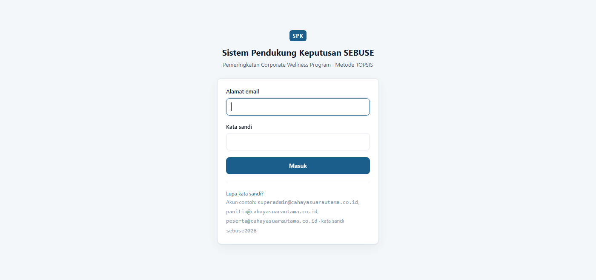
Gambar 4. 24 Tampilan Halaman Login (UC-01)
Aktor: seluruh peran
Dasbor menampilkan ringkasan keadaan event: jumlah peserta, jumlah peserta yang matriks keputusannya sudah terbentuk, jumlah baris log aktivitas, serta total bobot kriteria beserta penanda kesiapan perhitungan. Panel kanan menampilkan lima peringkat teratas hasil perhitungan terakhir dan tautan langkah berikutnya.
Isi dasbor menyesuaikan peran pengguna. Peserta hanya memperoleh tautan menuju papan peringkat dan rincian skor pribadinya.
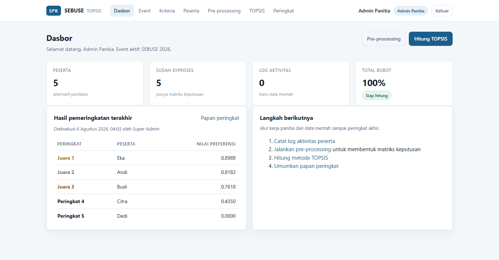
Gambar 4. 25 Tampilan Dasbor Admin Panitia
Aktor: Super Admin
Langkah:
Hasil: Sistem memvalidasi kelengkapan data serta keunikan alamat email, lalu menyimpannya ke tabel users. Pada penyuntingan, kolom kata sandi yang dibiarkan kosong tidak mengubah kata sandi lama. Akun yang sedang digunakan tidak dapat dihapus.
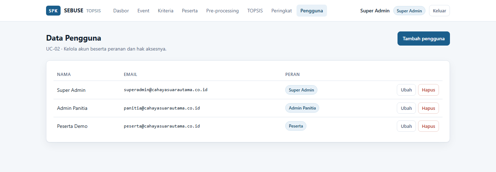
Gambar 4. 26 Tampilan Kelola Data Pengguna (UC-02)
Aktor: Super Admin
Langkah:
Hasil: Sistem memeriksa akumulasi seluruh bobot. Apabila totalnya tepat 100%, perubahan disimpan. Apabila tidak, seluruh perubahan dibatalkan dan sistem menampilkan peringatan agar bobot disesuaikan kembali.
Pemeriksaan dilakukan atas keseluruhan bobot, bukan satu per satu, karena satu bobot tidak dapat dinilai sahih secara sendirian. Penanda di kanan atas halaman menunjukkan status kesiapan perhitungan.
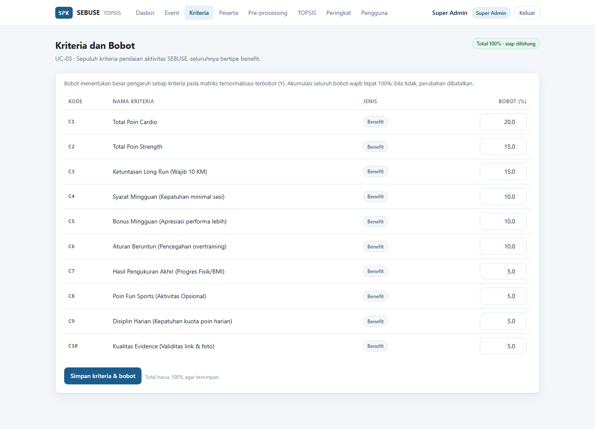
Gambar 4. 27 Tampilan Kelola Kriteria dan Bobot (UC-03)
Aktor: Admin Panitia
Langkah:
Hasil: Data peserta tersimpan sebagai alternatif penilaian. Kolom Skor terisi menunjukkan kelengkapan matriks keputusan peserta tersebut.
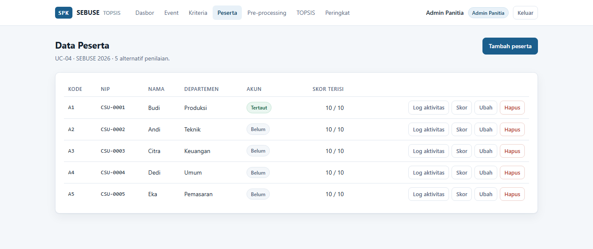
Gambar 4. 28 Tampilan Kelola Data Peserta (UC-04)
Aktor: Admin Panitia
Langkah:
Hasil: Sistem memeriksa kelengkapan nama kolom, lalu memvalidasi setiap baris. Bila seluruh baris memenuhi ketentuan, data disimpan sekaligus dan tercatat sebagai satu batch. Bila ada satu baris yang tidak memenuhi ketentuan, seluruh berkas dibatalkan dan sistem menampilkan nomor baris beserta alasan penolakannya.
Pembatalan menyeluruh ini disengaja: panitia tidak perlu menebak sebagian data mana yang sudah masuk sebelum memperbaiki berkasnya.
Ketentuan kolom. Baris pertama berkas wajib memuat nama kolom. Peserta dicocokkan melalui kolom NIP, sehingga satu berkas dapat memuat data seluruh peserta sekaligus. Batas satu unggahan adalah 5.000 baris.
| Kolom | Sifat | Keterangan | Contoh |
|---|---|---|---|
nip | wajib | NIP peserta, harus sudah terdaftar pada event | CSU-0001 |
tanggal | wajib | Tanggal aktivitas, format YYYY-MM-DD | 2026-03-02 |
jenis | wajib | cardio, strength, long_run, atau fun_sport | cardio |
poin | wajib | Poin aktivitas | 2 |
jarak_km | opsional | Wajib untuk Long Run agar ketuntasannya terhitung | 10.5 |
tautan_bukti | opsional | Tautan Strava atau foto Timestamp | https://... |
bukti_valid | opsional | Penilaian panitia atas bukti, diisi ya atau tidak | ya |
Penulisan jenis aktivitas tidak membedakan huruf besar dan kecil, serta menerima beberapa bentuk umum seperti Kardio, Long Run, dan Fun Sports.
Pembatalan batch. Setiap unggahan tercatat pada panel Riwayat impor beserta jumlah baris dan rentang tanggalnya. Tombol Batalkan batch menghapus seluruh baris dari satu unggahan tanpa mengganggu data dari unggahan lain.
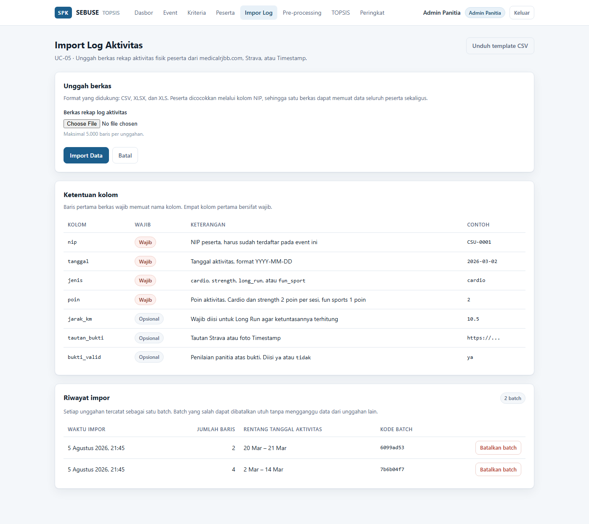
Gambar 4. 29 Tampilan Import Log Activities (UC-05)
Aktor: Admin Panitia
Langkah:
Hasil: Baris log tersimpan sebagai data mentah. Hari yang total poinnya melampaui kuota harian ditandai pada daftar, dan kelebihannya akan dipangkas otomatis saat pre-processing dijalankan.
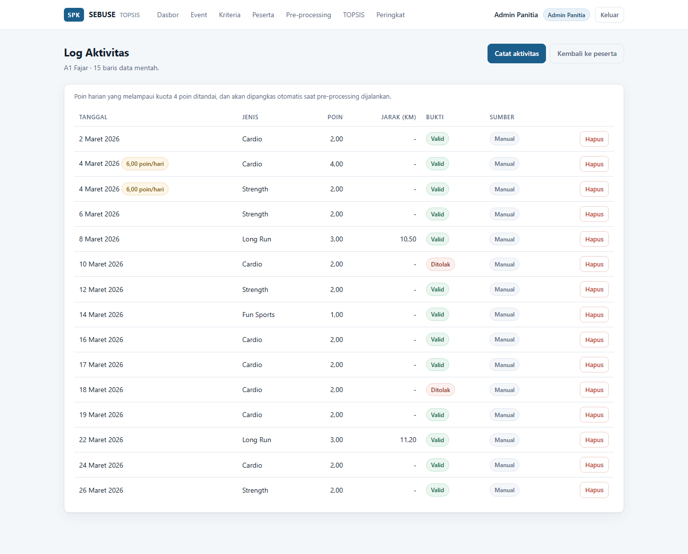
Gambar 4. 30 Tampilan Pencatatan Log Aktivitas Peserta
Aktor: Admin Panitia
Langkah:
Hasil: Sistem memangkas kuota poin harian yang melampaui batas, mengonversi setiap kriteria ke skala 0–100 menggunakan rumusnya masing-masing, menghitung penalti pelanggaran aturan beruntun, lalu menyimpan hasilnya sebagai matriks keputusan (X). Panel bawah halaman menampilkan pratinjau matriks tersebut.
Nilai kriteria C7 tidak ditimpa oleh proses ini karena bersumber dari pengukuran fisik oleh panitia, bukan dari log olahraga.
Perlakuan terhadap peserta tanpa log aktivitas. Peserta yang belum memiliki satu pun log aktivitas akan dilewati apabila skornya sudah ada. Ketentuan ini melindungi nilai yang dimasukkan langsung, misalnya data simulasi lima peserta Bab IV yang memang tidak memiliki log aktivitas. Tanpa perlakuan tersebut, menjalankan pre-processing akan mengubah seluruh nilai peserta itu menjadi nol. Peserta yang belum memiliki log maupun skor akan diisi nol beserta catatan "Belum ada log aktivitas".
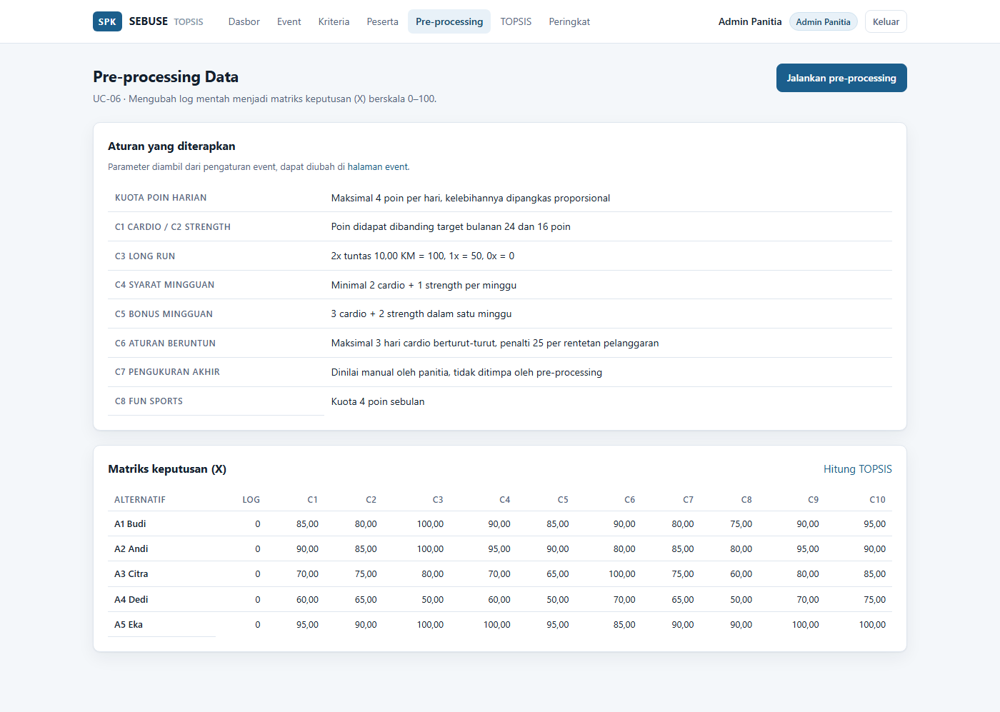
Gambar 4. 31 Tampilan Pre-processing Data dan Matriks Keputusan (UC-06)
Aktor: Admin Panitia
Langkah:
Hasil: Sistem menyusun matriks keputusan dari basis data, menjalankan seluruh tahapan TOPSIS, lalu menyimpan hasilnya ke tabel topsis_runs dan ranking_results. Pengguna langsung diarahkan ke halaman rincian komputasi.
Setiap eksekusi tercatat beserta waktu dan pelaksananya, sehingga riwayat perhitungan dapat ditelusuri.
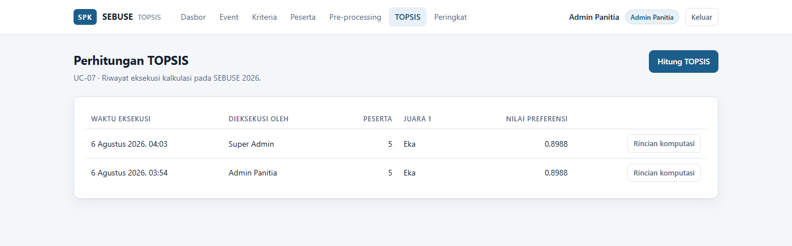
Gambar 4. 32 Tampilan Riwayat Perhitungan TOPSIS (UC-07)
Aktor: Admin Panitia
Halaman ini menampilkan keenam tahapan perhitungan secara berurutan beserta rumus yang digunakan:
| Langkah | Keluaran | Rumus |
|---|---|---|
| 1 | Matriks keputusan (X) | hasil pre-processing skala 0–100 |
| 2 | Matriks ternormalisasi (R) | rᵢⱼ = xᵢⱼ / √(Σ xᵢⱼ²) |
| 3 | Matriks ternormalisasi terbobot (Y) | yᵢⱼ = wⱼ × rᵢⱼ |
| 4 | Solusi ideal positif dan negatif | A⁺ = maks kolom Y, A⁻ = min kolom Y |
| 5 | Jarak Euclidean | D⁺ᵢ = √(Σ (yᵢⱼ − y⁺ⱼ)²), D⁻ᵢ = √(Σ (yᵢⱼ − y⁻ⱼ)²) |
| 6 | Nilai preferensi | Vᵢ = D⁻ᵢ / (D⁺ᵢ + D⁻ᵢ) |
Seluruh langkah disimpan sebagai cuplikan (snapshot) pada saat eksekusi. Dengan demikian rincian perhitungan dapat ditampilkan tanpa menghitung ulang, dan hasil perhitungan lama tetap dapat diaudit walaupun bobot kriteria diubah setelahnya. Bobot yang dipakai saat eksekusi ditampilkan sebagai penanda pada langkah ketiga.
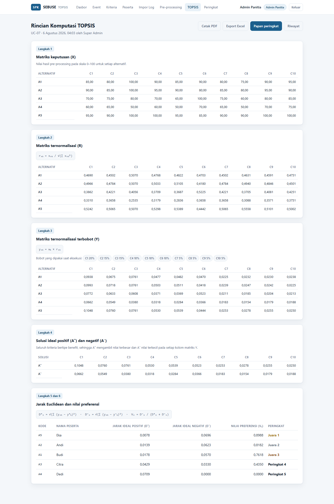
Gambar 4. 33 Tampilan Rincian Komputasi Metode TOPSIS (UC-07)
Aktor: Admin Panitia, Peserta
Langkah:
Hasil: Sistem mengambil hasil perhitungan terakhir dan menampilkan seluruh peserta terurut dari nilai preferensi tertinggi ke terendah, lengkap dengan jarak solusi ideal positif dan negatif sebagai bentuk transparansi.
Halaman ini terbuka bagi seluruh peran, sesuai tujuan penelitian dalam menegakkan transparansi hasil kompetisi.
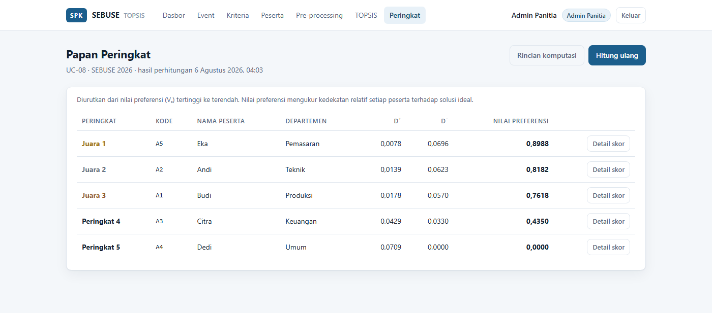
Gambar 4. 34 Tampilan Papan Peringkat (UC-08)
Bagi pengguna dengan peran Peserta, sistem menambahkan panel ringkasan peringkat pribadi di bagian atas halaman dan menyorot baris peserta yang bersangkutan pada tabel.
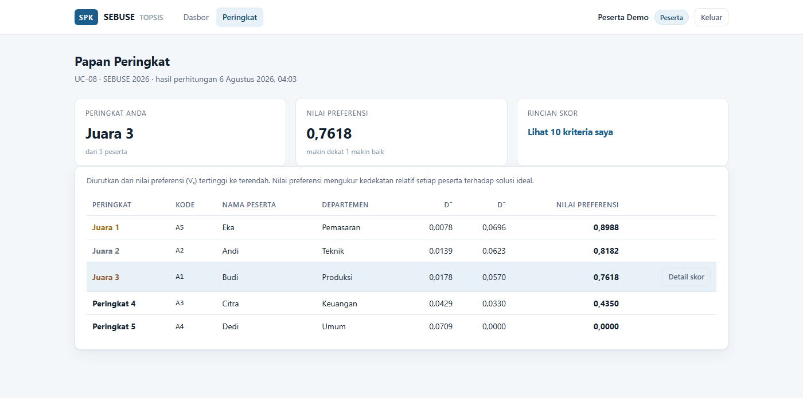
Gambar 4. 35 Tampilan Papan Peringkat pada Akun Peserta (UC-08)
Aktor: Peserta
Langkah:
Hasil: Sistem menampilkan rincian capaian sepuluh kriteria milik peserta beserta bobot, batang capaian, dan catatan evaluasi setiap kriteria. Panel atas menampilkan peringkat, nilai preferensi, serta jarak terhadap kedua solusi ideal.
Peserta hanya dapat membuka rincian skor miliknya sendiri. Admin Panitia dan Super Admin dapat membuka rincian skor peserta mana pun untuk keperluan verifikasi.
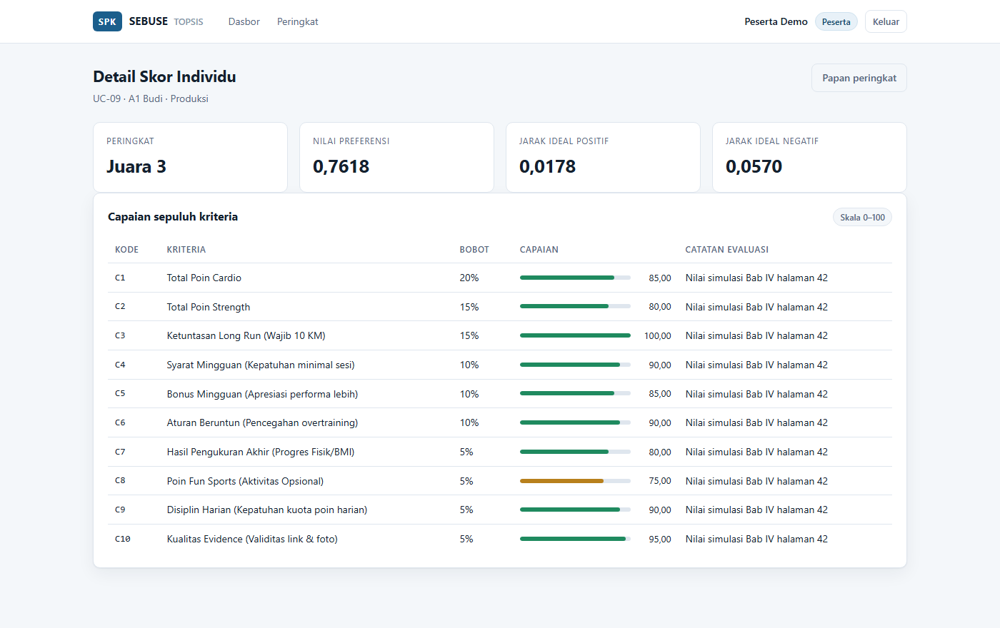
Gambar 4. 36 Tampilan Detail Skor Individu (UC-09)
Aktor: Admin Panitia
Langkah:
Hasil: Sistem menyusun laporan dari hasil perhitungan yang tersimpan, lalu mengunduhkan berkasnya ke perangkat pengguna. Nama berkas memuat nama event dan waktu perhitungan, misalnya laporan-peringkat-sebuse-2026-20260806-0403.pdf, sehingga laporan dari perhitungan berbeda tidak saling menimpa.
Isi laporan PDF. Satu halaman A4 memuat kop nama perusahaan, judul laporan, keterangan event, tabel hasil pemeringkatan beserta jarak solusi ideal, tabel kriteria beserta bobot yang tercatat saat perhitungan, serta ruang tanda tangan ketua panitia.
Isi laporan Excel. Berkas memuat tiga lembar kerja:
| Lembar | Isi |
|---|---|
| Peringkat | Keterangan event dan tabel hasil pemeringkatan |
| Matriks Keputusan | Matriks keputusan (X) serta solusi ideal positif dan negatif |
| Kriteria | Sepuluh kriteria beserta jenis dan bobotnya |
Lembar Matriks Keputusan disertakan agar hasil laporan dapat diperiksa ulang secara manual, tidak hanya dipercaya apa adanya.
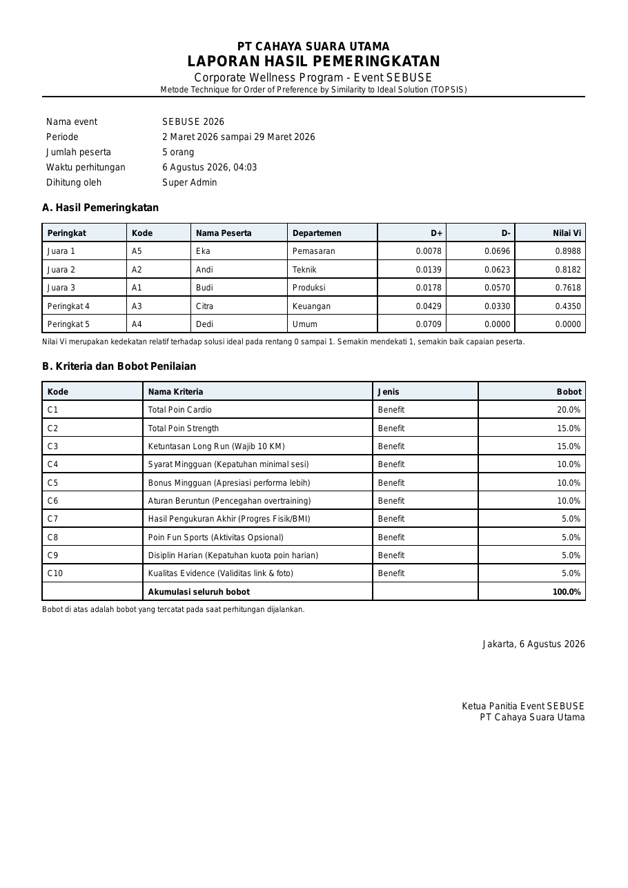
Gambar 4. 37 Keluaran Laporan Pemeringkatan Berformat PDF (UC-10)
Sepuluh kriteria penilaian beserta rumus konversinya ke skala 0–100. Seluruh kriteria bertipe benefit, yaitu semakin tinggi nilainya semakin baik.
| Kode | Kriteria | Bobot | Aturan | Rumus konversi |
|---|---|---|---|---|
| C1 | Total Poin Cardio | 20% | 1 sesi = 2 poin, target 3× seminggu, maksimum 24 poin sebulan | (poin didapat / 24) × 100 |
| C2 | Total Poin Strength | 15% | 1 sesi = 2 poin, target 2× seminggu, maksimum 16 poin sebulan | (poin didapat / 16) × 100 |
| C3 | Ketuntasan Long Run | 15% | wajib 10 KM per dua minggu, dua kali sebulan | 2× tuntas = 100, 1× = 50, 0× = 0 |
| C4 | Syarat Mingguan | 10% | minimal 2 cardio + 1 strength per minggu | (minggu patuh / 4) × 100 |
| C5 | Bonus Mingguan | 10% | 3 cardio + 2 strength dalam satu minggu | (minggu bonus / 4) × 100 |
| C6 | Aturan Beruntun | 10% | maksimal 3 hari cardio berturut-turut | 100 − (jumlah rentetan pelanggaran × 25) |
| C7 | Hasil Pengukuran Akhir | 5% | progres berat badan atau BMI pada akhir periode | skor penilaian panitia, skala 0–100 |
| C8 | Poin Fun Sports | 5% | 1 sesi = 1 poin, kuota 4 poin sebulan | (poin didapat / 4) × 100 |
| C9 | Disiplin Harian | 5% | maksimal 4 poin sehari | (hari patuh kuota / hari aktif) × 100 |
| C10 | Kualitas Evidence | 5% | tautan aktif dan foto bukti jelas | (bukti valid / total unggahan) × 100 |
Catatan penting:
Seluruh parameter di atas tersimpan pada tingkat event dan dapat diubah melalui halaman Event › Ubah aturan tanpa mengubah kode program.
Bagian ini menyusun urutan langkah untuk memperagakan seluruh kemampuan sistem secara berurutan, misalnya pada saat sidang atau serah terima kepada panitia. Skenario disusun agar setiap use case tampil sekali, dan agar hasil akhirnya dapat langsung dibandingkan dengan perhitungan manual pada Bab IV.
bin/rails db:drop db:create db:migrate db:seed
bin/rails serverData awal memuat dua event:
| Event | Isi | Kegunaan pada peragaan |
|---|---|---|
| SEBUSE 2026 | Lima peserta beserta matriks keputusan Bab IV, tanpa log aktivitas | Memperagakan perhitungan TOPSIS dan membandingkannya dengan Bab IV |
| SEBUSE 2026 (demo pre-processing) | Satu peserta beserta lima belas baris log aktivitas | Memperagakan impor berkas dan pre-processing dari data mentah |
Siapkan pula berkas docs/contoh/contoh-impor-log-aktivitas.csv yang akan diunggah pada langkah 4.
Penting. Peragaan impor dan pre-processing dilakukan pada event demo, bukan pada SEBUSE 2026. Menambahkan log aktivitas ke lima peserta SEBUSE 2026 akan membuat pre-processing menghitung ulang nilainya, sehingga matriks keputusan Bab IV tidak lagi sama dengan yang tertulis di skripsi.
peserta@cahayasuarautama.co.id. Perhatikan navigasi hanya memuat Dasbor dan Peringkat.http://localhost:3000/users secara langsung. Sistem mengalihkan ke dasbor beserta pesan penolakan, membuktikan pembatasan berada pada tingkat pengendali, bukan sekadar penyembunyian menu.superadmin@cahayasuarautama.co.id. Menu Pengguna kini tersedia.docs/contoh/contoh-impor-log-aktivitas.csv, lalu tekan Import Data. Sistem memberitahukan lima baris berhasil diimpor.CSU-9999, lalu unggah kembali. Sistem menolak seluruh berkas sambil menyebut nomor baris dan alasannya, dan jumlah log tidak bertambah.| Yang dibandingkan | Nilai acuan pada Bab IV |
|---|---|
| Pembagi normalisasi C1 | 181,2457 |
| Matriks R baris A1 kolom C1 | 0,4690 |
| Solusi ideal positif C1 | 0,1048 |
| Nilai preferensi A5 Eka | 0,8988 |
| Nilai preferensi A4 Dedi | 0,0000 |
peserta@cahayasuarautama.co.id. Akun ini sudah ditautkan ke peserta A1 Budi oleh data awal./scores/2, yaitu peserta lain. Sistem menolaknya.bundle exec rspec spec/services/topsis_engine_spec.rb --format documentationKeluaran perintah tersebut memuat daftar butir yang diperiksa, termasuk kesesuaian pembagi normalisasi, matriks R, solusi ideal, jarak Euclidean, dan nilai preferensi terhadap perhitungan manual Bab IV.
| Gejala | Penyebab | Penyelesaian |
|---|---|---|
| Peringatan "Total bobot kriteria belum 100%" saat menghitung TOPSIS | Akumulasi bobot kriteria tidak tepat 1,00 | Buka menu Kriteria, sesuaikan bobot hingga totalnya 100%, lalu simpan |
| Peringatan "Belum ada matriks keputusan" | Pre-processing belum dijalankan | Buka menu Pre-processing dan tekan Jalankan pre-processing |
| Peserta tidak muncul pada hasil perhitungan | Skor kriteria peserta belum lengkap | Jalankan pre-processing kembali; peserta dengan baris tidak lengkap sengaja dilewati agar tidak merusak matriks |
| Peserta tidak dapat membuka rincian skornya | Akun pengguna belum ditautkan ke data peserta | Buka Peserta › Ubah, pilih akun pada kolom Akun peserta |
| Pesan "Anda tidak memiliki hak akses" | Halaman berada di luar kewenangan peran | Masuk menggunakan akun dengan peran yang sesuai |
| Nilai C7 seluruh peserta bernilai 0 | Nilai C7 belum diisi panitia | Isi nilai C7 secara manual; nilai ini memang tidak dihasilkan oleh pre-processing |
Galat PG::ConnectionBad saat menjalankan aplikasi | Layanan PostgreSQL belum berjalan | Jalankan layanan PostgreSQL, lalu ulangi perintah |
| Impor ditolak dengan pesan "Kolom wajib belum lengkap" | Baris pertama berkas tidak memuat keempat nama kolom wajib | Unduh template CSV dan salin baris pertamanya |
| Impor ditolak dengan pesan "NIP ... tidak terdaftar" | NIP pada berkas belum didaftarkan sebagai peserta event ini | Daftarkan peserta melalui UC-04, atau perbaiki penulisan NIP pada berkas |
| Impor ditolak dengan pesan "tanggal ... tidak dikenali" | Kolom tanggal tidak berformat YYYY-MM-DD | Perbaiki format tanggal. Pada Excel, pastikan kolom bertipe Date atau Text yang benar |
| Impor ditolak dengan pesan "Format berkas ... tidak didukung" | Berkas bukan CSV, XLSX, atau XLS | Simpan ulang berkas ke salah satu format tersebut |
| Sebagian data terimpor ganda | Berkas yang sama diunggah dua kali | Batalkan salah satu batch melalui panel Riwayat impor |
| Tombol Cetak PDF tidak muncul | Perhitungan TOPSIS belum pernah dijalankan, atau akun berperan Peserta | Jalankan UC-07 lebih dahulu, dan gunakan akun Admin Panitia |
| Nilai peserta berubah menjadi nol setelah pre-processing | Peserta memiliki log aktivitas yang tidak lengkap, sehingga nilainya dihitung ulang dari log tersebut | Periksa log aktivitas peserta. Peserta yang tidak memiliki log sama sekali tidak akan ditimpa, tetapi peserta yang memiliki sebagian log akan dihitung dari log yang ada |
| Matriks keputusan data simulasi berubah | Log aktivitas ditambahkan pada peserta data simulasi, lalu pre-processing dijalankan | Pulihkan data awal dengan bin/rails db:drop db:create db:migrate db:seed, dan lakukan peragaan impor pada event demo |
Kebenaran sistem dijaga oleh pengujian otomatis yang dapat dijalankan kapan saja melalui bundle exec rspec. Ringkasan cakupannya sebagai berikut:
| Berkas pengujian | Yang dibuktikan |
|---|---|
spec/services/topsis_engine_spec.rb | Keluaran mesin TOPSIS sama dengan perhitungan manual Bab IV hingga empat angka desimal, meliputi sepuluh pembagi normalisasi, matriks R, solusi ideal, jarak Euclidean, dan nilai preferensi. Termasuk pula kasus batas seperti alternatif identik dan kolom bernilai nol |
spec/services/preprocessing_engine_spec.rb | Setiap rumus C1 sampai C10 diuji sendiri-sendiri, termasuk pemangkasan kuota harian, pembatasan nilai pada rentang 0 sampai 100, dan perlindungan skor peserta tanpa log aktivitas |
spec/services/preprocessing_engine_rules_spec.rb | Penurunan skor dari dua puluh satu baris log mentah menghasilkan nilai yang sama dengan contoh perhitungan aturan penilaian |
spec/services/topsis_run_creator_spec.rb | Matriks keputusan tersusun benar dari basis data, cuplikan perhitungan tersimpan, dan peserta dengan skor tidak lengkap dilewati |
spec/services/activity_log_import_spec.rb | Pembacaan berkas CSV dan XLSX, penolakan baris tidak sah beserta nomor barisnya, dan pembatalan seluruh berkas bila ada satu baris yang salah |
spec/services/report_generator_spec.rb | Isi berkas PDF dan Excel dibaca kembali dan diperiksa, bukan hanya keberhasilan pemanggilan metodenya |
spec/requests/authorization_spec.rb | Pembatasan hak akses setiap use case bagi ketiga peran |
spec/requests/committee_workflow_spec.rb | Alur kerja panitia dari pencatatan log sampai papan peringkat |
spec/requests/participant_view_spec.rb | Peserta hanya dapat membuka rincian skor miliknya |
spec/requests/import_and_report_spec.rb | Unggahan berkas sesungguhnya, pembatalan batch, dan pengunduhan laporan |
spec/models/criterion_spec.rb | Akumulasi bobot wajib tepat 100% sesuai syarat UC-03 |
spec/models/user_spec.rb | Pembagian kewenangan ketiga peran |
Pengujian topsis_engine_spec.rb merupakan yang terpenting bagi penelitian ini, karena berkas itulah yang menyatakan bahwa hasil sistem sama dengan hasil perhitungan tangan yang tertulis pada skripsi.
| Istilah | Penjelasan |
|---|---|
| Alternatif | Pilihan yang diperingkatkan. Pada penelitian ini setiap peserta menjadi satu alternatif, diberi kode A1 sampai An |
| Kriteria | Aspek penilaian. Terdapat sepuluh kriteria, diberi kode C1 sampai C10 |
| Benefit | Sifat kriteria yang semakin tinggi nilainya semakin baik. Seluruh kriteria SEBUSE bertipe benefit |
| Cost | Sifat kriteria yang semakin rendah nilainya semakin baik. Tidak dipakai pada penelitian ini, namun tetap didukung sistem |
| Bobot (W) | Besar pengaruh setiap kriteria terhadap hasil akhir. Akumulasi seluruh bobot harus tepat 1,0 |
| Matriks keputusan (X) | Kumpulan nilai seluruh alternatif pada seluruh kriteria setelah pra-pemrosesan, berskala 0 sampai 100 |
| Normalisasi | Penyeragaman skala antar kriteria dengan membagi setiap nilai oleh akar jumlah kuadrat kolomnya |
| Matriks ternormalisasi (R) | Hasil normalisasi matriks keputusan, bernilai antara 0 dan 1 |
| Matriks terbobot (Y) | Matriks ternormalisasi yang setiap kolomnya telah dikalikan bobot kriteria |
| Solusi ideal positif (A⁺) | Susunan nilai terbaik pada setiap kriteria, diambil dari nilai terbesar kolom matriks Y |
| Solusi ideal negatif (A⁻) | Susunan nilai terburuk pada setiap kriteria, diambil dari nilai terkecil kolom matriks Y |
| Jarak Euclidean | Ukuran kedekatan geometris antara satu alternatif dengan susunan solusi ideal |
| D⁺ | Jarak Euclidean satu alternatif terhadap solusi ideal positif. Semakin kecil semakin baik |
| D⁻ | Jarak Euclidean satu alternatif terhadap solusi ideal negatif. Semakin besar semakin baik |
| Nilai preferensi (Vᵢ) | Kedekatan relatif satu alternatif terhadap solusi ideal, bernilai 0 sampai 1. Dasar pengurutan peringkat |
| Rank reversal | Gejala berubahnya urutan peringkat akibat perubahan bobot atau perubahan susunan alternatif |
| Istilah | Penjelasan |
|---|---|
| Pra-pemrosesan (pre-processing) | Tahap mengubah log aktivitas mentah menjadi matriks keputusan berskala 0 sampai 100 |
| Kuota poin harian | Batas empat poin per hari. Kelebihannya dipangkas proporsional agar komposisi jenis olahraga tetap terjaga |
| Rentetan pelanggaran | Satu kelompok hari cardio berturut-turut yang melampaui batas tiga hari. Penalti dihitung per rentetan, bukan per hari |
| Batch impor | Satu kali unggahan berkas rekap. Ditandai secara tersendiri agar dapat dibatalkan utuh |
| Cuplikan perhitungan (snapshot) | Salinan bobot dan seluruh matriks pada saat perhitungan dijalankan, disimpan agar hasil lama tetap dapat diaudit |
| Evidence | Bukti aktivitas berupa tautan Strava atau foto Timestamp, dinilai keabsahannya oleh panitia untuk kriteria C10 |
| Aktor | Peran pengguna sistem, yaitu Super Admin, Admin Panitia, dan Peserta |
| Use case | Satu fungsi sistem dari sudut pandang aktor, diberi kode UC-01 sampai UC-10 |
Tangkapan layar pada dokumen ini disarankan ditempatkan sebagai subbab baru C.5 Implementasi Antarmuka, yaitu setelah C.4 Diagram dan sebelum D. Kelebihan dan Kelemahan Penelitian.
Penomoran Gambar 4. 24 sampai Gambar 4. 37 pada dokumen ini disusun dengan asumsi urutan gambar Bab IV sebagai berikut:
| Rentang | Isi |
|---|---|
| Gambar 4. 1 | Use Case Diagram (C.1) |
| Gambar 4. 2 – 4. 11 | Activity Diagram UC-01 sampai UC-10 (C.2) |
| Gambar 4. 12 – 4. 21 | Sequence Diagram UC-01 sampai UC-10 (C.3) |
| Gambar 4. 22 – 4. 23 | Class Diagram dan ERD (C.4) |
| Gambar 4. 24 – 4. 37 | Implementasi antarmuka (C.5, dokumen ini) |
Apabila jumlah gambar pada C.4 berbeda, penomoran pada dokumen ini perlu digeser sesuai keadaan sebenarnya.
Gambar 4. 24 Tampilan Halaman Login (UC-01)
Gambar 4. 25 Tampilan Dasbor Admin Panitia
Gambar 4. 26 Tampilan Kelola Data Pengguna (UC-02)
Gambar 4. 27 Tampilan Kelola Kriteria dan Bobot (UC-03)
Gambar 4. 28 Tampilan Kelola Data Peserta (UC-04)
Gambar 4. 29 Tampilan Import Log Activities (UC-05)
Gambar 4. 30 Tampilan Pencatatan Log Aktivitas Peserta
Gambar 4. 31 Tampilan Pre-processing Data dan Matriks Keputusan (UC-06)
Gambar 4. 32 Tampilan Riwayat Perhitungan TOPSIS (UC-07)
Gambar 4. 33 Tampilan Rincian Komputasi Metode TOPSIS (UC-07)
Gambar 4. 34 Tampilan Papan Peringkat (UC-08)
Gambar 4. 35 Tampilan Papan Peringkat pada Akun Peserta (UC-08)
Gambar 4. 36 Tampilan Detail Skor Individu (UC-09)
Gambar 4. 37 Keluaran Laporan Pemeringkatan Berformat PDF (UC-10)Seluruh berkas tangkapan layar tersimpan pada docs/gambar/ dengan penamaan berurutan sesuai pembahasan pada dokumen ini:
| Berkas | Gambar |
|---|---|
01-login.png | Gambar 4. 24 |
02-dasbor-panitia.png | Gambar 4. 25 |
04-data-pengguna.png | Gambar 4. 26 |
03-kriteria-bobot.png | Gambar 4. 27 |
05-data-peserta.png | Gambar 4. 28 |
13-impor-log.png | Gambar 4. 29 |
12-log-aktivitas.png | Gambar 4. 30 |
06-preprocessing.png | Gambar 4. 31 |
07-riwayat-topsis.png | Gambar 4. 32 |
08-rincian-komputasi.png | Gambar 4. 33 |
09-papan-peringkat.png | Gambar 4. 34 |
10-peringkat-peserta.png | Gambar 4. 35 |
11-detail-skor.png | Gambar 4. 36 |
14-laporan-pdf.png | Gambar 4. 37 |
Hasil perhitungan sistem pada Gambar 4. 33, Gambar 4. 34, dan Gambar 4. 37 sesuai dengan perhitungan manual pada Bab IV:
| Kode | Peserta | D⁺ | D⁻ | Vᵢ | Peringkat |
|---|---|---|---|---|---|
| A5 | Eka | 0,0078 | 0,0696 | 0,8988 | Juara 1 |
| A2 | Andi | 0,0139 | 0,0623 | 0,8182 | Juara 2 |
| A1 | Budi | 0,0178 | 0,0570 | 0,7618 | Juara 3 |
| A3 | Citra | 0,0429 | 0,0330 | 0,4350 | Peringkat 4 |
| A4 | Dedi | 0,0709 | 0,0000 | 0,0000 | Peringkat 5 |
Nilai di atas berlaku untuk konfigurasi bobot dengan C7 sebesar 5%, sehingga akumulasi seluruh bobot tepat 100% sesuai syarat UC-03.
Kebenaran angka tersebut dikunci oleh pengujian otomatis pada spec/services/topsis_engine_spec.rb, yang membandingkan keluaran mesin perhitungan dengan angka perhitungan manual hingga empat angka desimal.